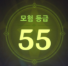

info for genshin impact
정보
- 캐릭터를 키우는데에는 절대적인 것이 없습니다.- 여기에 적혀있는건 무과금/저과금 기준의 정보로 대부분 작성되어 있습니다.
+ 용어 정리


모험가 레벨 = 모험 등급 = AR
월드 레벨 = WL
(모험 등급 아래에 있음)
모험 등급이 증가하면 월드 레벨도 올라감 / 올릴 수 있음
약어 / 동일 단어
원충: 원소 충전 효율
원마: 원소 마스터리
치확: 치명타 확률
치피: 치명타 피해
원소 전투 스킬 = E
원소 폭발 = Q = 궁
명함 = 0돌
풀돌 = 6돌
월드 보스 = 토벌 보스
영역 토벌 보스 = 주간 보스
+ 정보 링크
캐릭터 / Characters
+ 캐릭터 키우는데 필요한 정보+ 돌파 / 최대레벨 증가
| 청금석 관련 | 지역특산물 | 일반몹재료 | 월드보스재료 | 모라 | |
| 20렙 돌파 | 가루 1개 | 3개 | 1성 3개 | 2만 | |
| 40렙 돌파 | 조각 3개 | 10개 | 1성 15개 | 2개 | 4만 |
| 50렙 돌파 | 조각 6개 | 20개 | 2성 12개 | 4개 | 6만 |
| 60렙 돌파 | 덩이 3개 | 30개 | 2성 18개 | 8개 | 8만 |
| 70렙 돌파 | 덩이 6개 | 45개 | 3성 12개 | 12개 | 10만 |
| 80렙 돌파 | 완전체 6개 | 60개 | 3성 24개 | 20개 | 12만 |
청금석 : 가루 1개, 조각 9개, 덩이 9개, 완전체 6개
지역특산물 : 168개
일반몹재료 : 1성 18개, 2성 30개, 3성 36개
모라 : 42만
+ 특성 레벨업
n렙때 n+1렙 가는데 필요한 재료 (0돌 기준)
(책/스코롤/석판은 2성부터 존재한다)
각 특설 당 필요한 량
책 / 스크롤 / 원판 : 2성 3개, 3성 21개, 4성 38개
일반몹 재료 : 1성 6개, 2성 22개, 3성 31개
주간보스 재료: 6개
모라 : 165.25만
왕관 : 1개
총 필요한 량은 여기서 3배
(책/스코롤/석판은 2성부터 존재한다)
| 책/스크롤/석판 | 일반몹재료 | 주간보스재료 | 왕관 | 모라 | 조건 | |
| 1렙 | 2성 3개 | 1성 6개 | 12500 | 40렙 돌파 후 | ||
| 2렙 | 3성 2개 | 2성 3개 | 17500 | 50렙 돌파 후 | ||
| 3렙 | 3성 4개 | 2성 4개 | 25000 | 50렙 돌파 후 | ||
| 4렙 | 3성 6개 | 2성 6개 | 30000 | 60렙 돌파 후 | ||
| 5렙 | 3성 9개 | 2성 9개 | 37500 | 60렙 돌파 후 | ||
| 6렙 | 4성 4개 | 3성 4개 | 1개 | 12만 | 70렙 돌파 후 | |
| 7렙 | 4성 6개 | 3성 6개 | 1개 | 26만 | 70렙 돌파 후 | |
| 8렙 | 4성 12개 | 3성 9개 | 2개 | 45만 | 80렙 돌파 후 | |
| 9렙 | 4성 16개 | 3성 12개 | 2개 | 1개 | 70만 | 80렙 돌파 후 |
책 / 스크롤 / 원판 : 2성 3개, 3성 21개, 4성 38개
일반몹 재료 : 1성 6개, 2성 22개, 3성 31개
주간보스 재료: 6개
모라 : 165.25만
왕관 : 1개
총 필요한 량은 여기서 3배
+ 캐릭터 목록
+ 푸리나
원소전투스킬로 지속적인 물속성 딜이 가능하고 원소폭발로 딜뻥을 넣어주는 캐릭터
돌파 관련
1. 청금석
순수한 (파란) 청금석 (게임닷)
2. 일반몹재료
꽃꿀 (게임닷)
3. 지역특산물
호숫빛 은방울 꽃 위치 (원신 맵스)
4. 월드보스 재료
초월하지 못한 물 (게임닷) | 물의 환인간 (티스토리)
특성 관련
찍는 순서: 원소전투스킬-> 원소폭발 -> 일반공격
1. 책/스크롤/석판
정의 시리즈 (게임닷) | 위치 (게임닷)
2. 일반몹재료
꿀꽃 (게임닷)
3. 주간보스재료
빛 없는 물질 (게임닷) | LV70이상 별을 삼킨 고래 (게임닷)
무기
페보니우스의 검 (원충을 챙기기에 좋다)
성유물
황금극단 4세트 | 위치
성유물 / Artifacts
last update : 12 / 21 / 2023